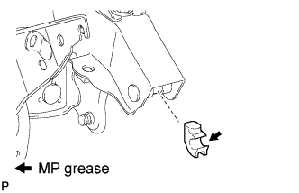
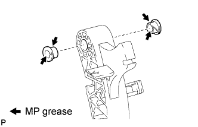
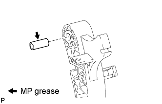
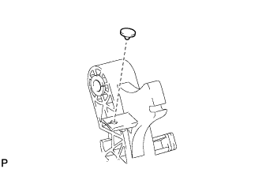
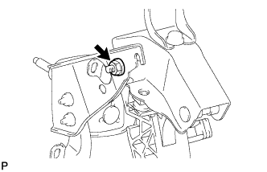
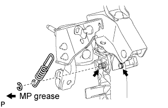
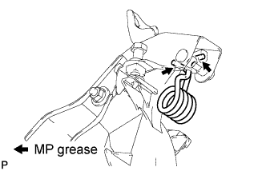
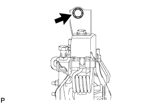

CLUTCH PEDAL (for RHD) > INSTALLATION |
| 1. INSTALL CLUTCH PEDAL SPRING HOLDER |
 |
Apply MP grease to the contact surface of the spring holder.
Install the clutch pedal spring holder to the clutch pedal bracket.
| 2. INSTALL CLUTCH PEDAL BUSH |
 |
Apply MP grease to the inside and outside of 2 new bushes.
Install the 2 bushes to the clutch pedal.
| 3. INSTALL CLUTCH PEDAL SHAFT COLLAR |
 |
Apply MP grease to the clutch pedal shaft collar.
Install the clutch pedal shaft collar to the clutch pedal.
| 4. INSTALL NO. 2 CLUTCH PEDAL CUSHION |
 |
Install the clutch pedal cushion to the clutch pedal.
| 5. INSTALL CLUTCH PEDAL PAD |
Install the clutch pedal pad to the clutch pedal.
| 6. INSTALL CLUTCH PEDAL SUB-ASSEMBLY |
 |
Install the clutch pedal to the clutch pedal bracket with the nut, washer and bolt.
| 7. INSTALL CLUTCH PEDAL SPRING |
 |
Apply MP grease to the pins of the clutch pedal bracket and clutch pedal.
Connect the spring to the clutch pedal, and connect the spring to the clutch pedal bracket with a new E-ring.
| 8. INSTALL TURNOVER SPRING |
 |
Apply MP grease to the contact surfaces of the spring holder, clutch pedal and spring.
Move the pedal to the full stroke position.
Install the spring to the clutch pedal and spring holder.
| 9. INSTALL CLUTCH PEDAL BRACKET SUB-ASSEMBLY |
 |
Install the clutch pedal bracket to the vehicle, and then temporarily install the bolt.
Connect the clutch start switch connector.
w/ Cruise Control System:
Connect the clutch switch connector.
| 10. INSTALL CLUTCH MASTER CYLINDER ASSEMBLY |
Install the clutch master cylinder assembly (Click here).